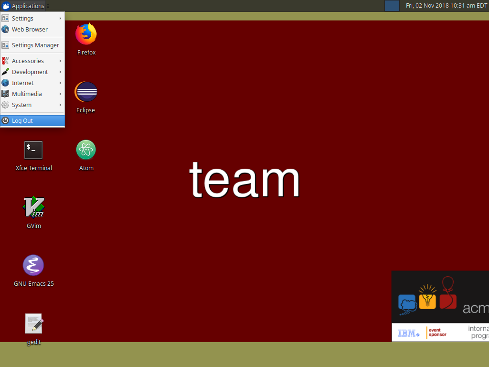
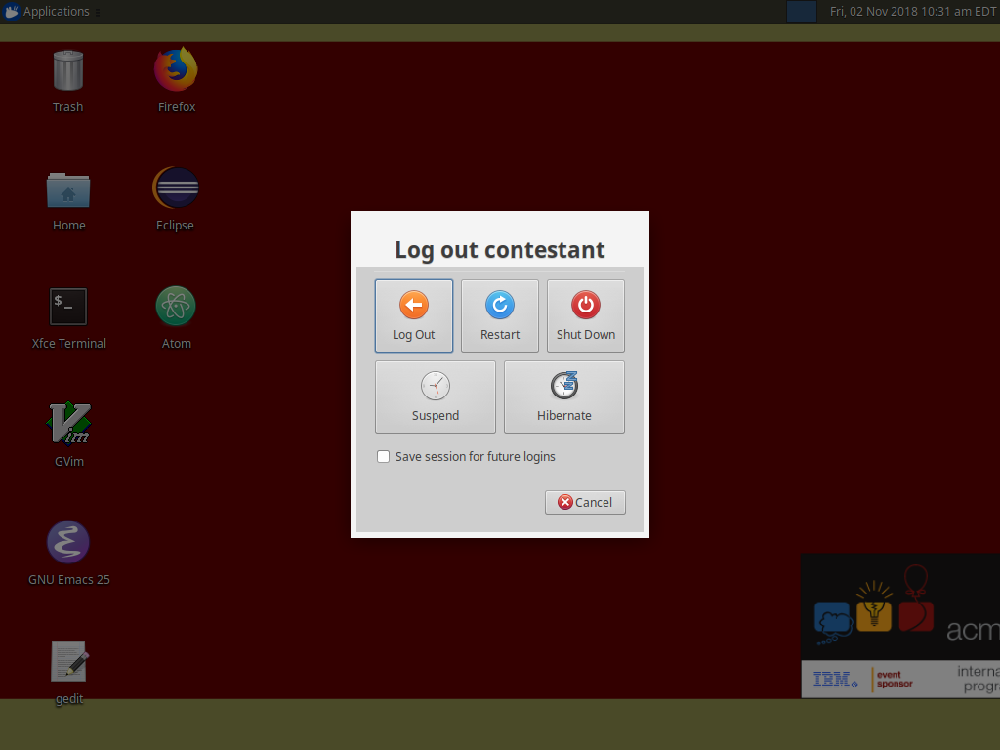
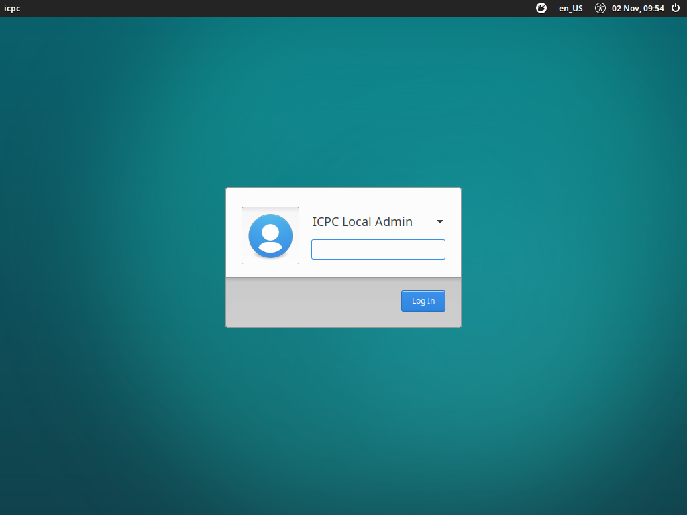
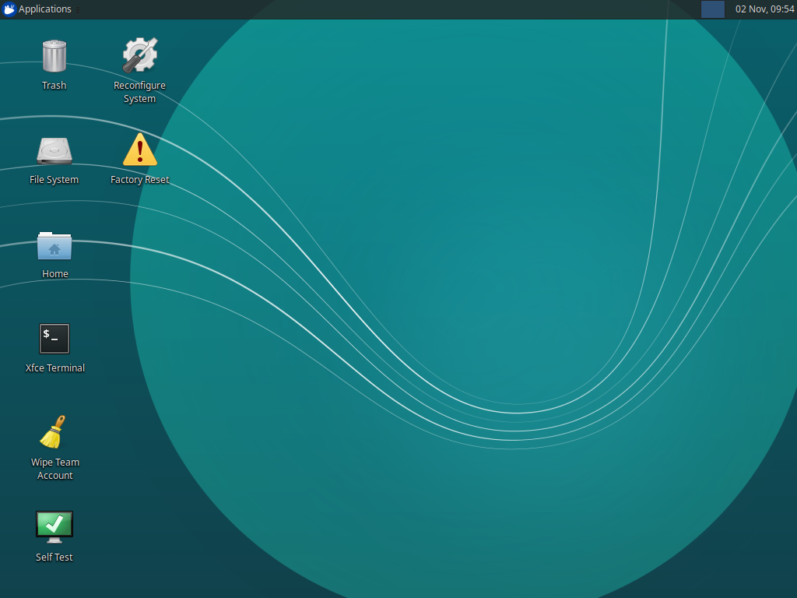

Sometimes you might need to perform administrative tasks on the system. You can do this from the special icpcadmin account

Sometimes you might need to perform administrative tasks on the system. You can do this from the special icpcadmin account
In the top left corner of the screen, click on "Applications", then select "Log Out" from the menu.

At the dialog, select "Log Out"

On the login screen, make sure the user selected is "ICPC Admin". Then enter the system password(Ask your site director)

Once logged in you will be on the admin desktop. There are a few desktop shortcuts here to help make your life easier.
